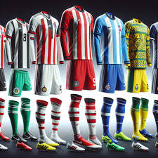
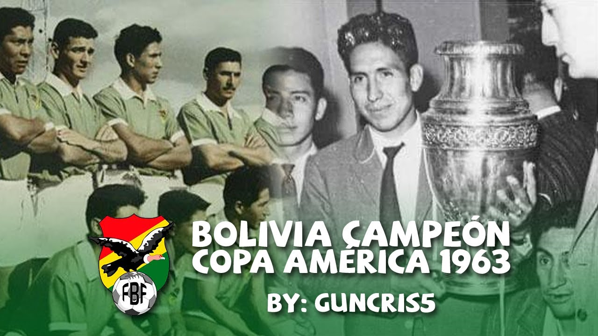
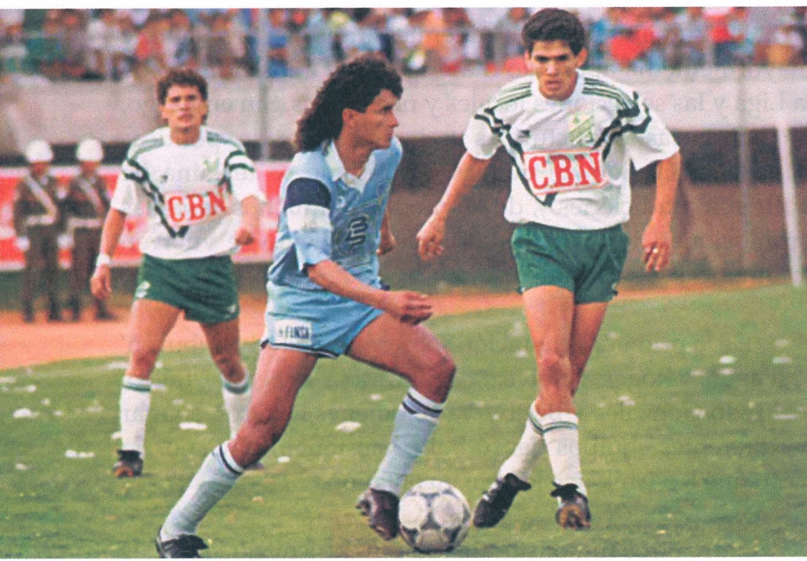
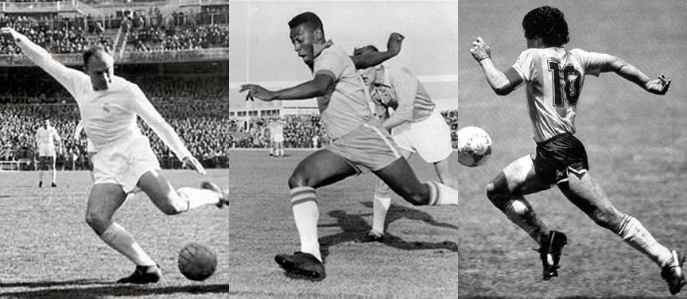
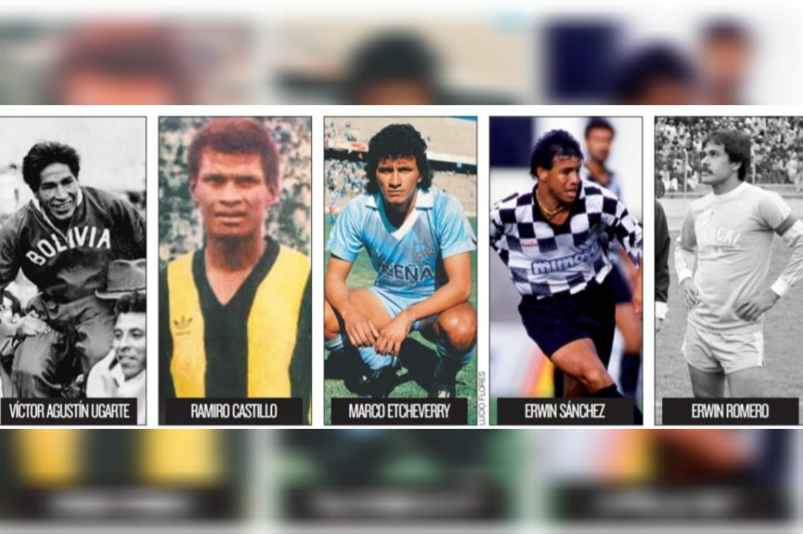

LA IMPLEMENTACIÓN
La FIFA (Federación Internacional de Fútbol Asociación), establece que el equipamiento básico obligatorio consta de: camiseta con mangas, pantalón corto para los jugadores (los porteros puede usar un pantalón largo), calcetas largas, espinilleras y calzado especial. Las camisetas de fútbol son mucho más que una prenda de vestir. Representan la identidad de un equipo y se crean con materiales especializados, tecnología avanzada y procesos de diseño complejos

REGLAS DEL FUTBOL
Está prohibido en el fútbol todo tipo de actitudes violentas, como:
Definición-La histora del FUTBOL
La palabra FUTBOL proviene del inglés y se divide en dos palabras que son: FOOT que significa pie y BALL que significa balón o pelota conocido tambien en nuestro país como balonpie. El Fútbol 5 adaptado, blindfutsal o blind football (fútbol a ciegas) es una práctica deportiva que constituye una modalidad del fútbol 5 adaptado para personas amblíopes y ciegas, en el que participan también personas sin discapacidad visual. En su modalidad masculina es considerado deporte paralímpico desde 1996. Se utiliza una pelota sonora y cada equipo se integra con cuatro personas ciegas o con disminución visual severa —que deben jugar con cubreojos— y un portero sin discapacidad que también debe orientar a los jugadores ciegos, completándose con un «llamador» ubicado detrás de la meta contraria y las indicaciones orientativas de la persona encargada de la dirección técnica. Se aplican las reglas de la FIFA para el futsal, con las adaptaciones establecidas por la IBSA (Federación Internacional de Deportes para Ciegos). Se utilizan tres clasificaciones para garantizar la paridad entre competidores (B1, B2 y B3). Hombres y mujeres compiten separadamente

Origen del FUTBOL
El fútbol moderno se inventó en Inglaterra en el siglo XIX, pero los juegos de pelota, que
podrían ser ancestros del balompié, son mucho más antiguos y existieron en casi todas las
culturas, incluidas las de Mesoamérica, como la Maya o la Azteca.
La fecha de nacimiento oficial del fútbol, es la de 1848, aunque las reglas tomasen tiempo
en ser adoptadas por el resto de Inglaterra. En 1863 un grupo de 11 escuelas y clubes de
Londres adoptaron un reglamento en común, y para 1877 la Asociación de Fútbol había sido
creada con 43 clubes ingleses registrados.
Los migrantes británicos en América Latina fueron regando el gusto por el balompié en
nuestro continente, así como en el resto del mundo por donde el Imperio Británico pasó.
PRIMERAS COPAS NUMDIALES
En 1930, se realizó el Primer Campeonato Mundial de Fútbol, en Montevideo, Uruguay. La Selección Chilena fue uno de los trece equipos que tomaron parte en la cita, invitados por el comité organizador. Aun cuando ganaron dos de sus tres partidos (contra México y Francia), los nacionales no lograron avanzar a semifinales, fase en que fueron derrotados por el seleccionado argentino. No obstante ello, la prensa de la época destacó el progreso técnico del equipo, dirigido con rigurosidad por el húngaro György Orth, así como también el desempeño del goleador Guillermo Subiabre y del centerhalf Guillermo Saavedra, apodado "el Monumento".

PRIMEROS TORNEOS
La Primera División de Bolivia (conocida como Liga Tecno por motivos de patrocinio y oficialmente como División Profesional del Fútbol Boliviano (DivPro)) es la máxima categoría del Sistema de Ligas de Bolivia. Es organizada desde 2018 directamente por la Federación Boliviana de Fútbol (FBF) tras suceder a la otrora Liga del Fútbol Profesional Boliviano (LFPB). En la temporada 2003 se cambia el formato del campeonato, pasando de un torneo largo con un campeón anual, a dos torneos en cada temporada, divididos en Torneo Apertura y Torneo Clausura, cada uno con su respectivo campeón. La Primera División es la única categoría con estatus profesional en Bolivia, mientras que el resto de divisiones dependen de sus correspondientes asociaciones departamentales. El primer campeonato profesional en Bolivia vio sus inicios con el Campeonato Paceño de 1950, en el que sólo participaron clubes del departamento de La Paz, esto debido a ser la primera región en contar con una entidad profesional de fútbol. Posteriormente y una vez alcanzado el estatus profesional, las asociaciones de fútbol de los departamentos de Oruro y Cochabamba se integraron al campeonato nacional, lo cual permitió que más regiones del país participaran del torneo, adquiriendo así una mayor competitividad. El Campeonato de 1954 denominado Mixto7 fue la primera competición de clubes de fútbol de Bolivia cuyo ganador fue reconocido como campeón nacional8. Es importante señalar que en sólo dos campeonatos se tuvo al menos a un representante de cada uno de los nueve departamentos de Bolivia, siendo estos los campeonatos de 1961 y 1964.9 Desde 1950, el equipo que más campeonatos ha obtenido es Bolívar con 30, seguido por The Strongest con 16 y Jorge Wilstermann con 15.10
PRIMEROS GOLES
Tradicionalmente se ha pensado que el primer gol de la historia del fútbol lo marcó Gershom Cox, jugador del Aston Villa en su portería, en el partido que enfrentaba a los ‘villanos’ ante el Wolverhampton Wanderers. Pero una investigación realizada por el periodista inglés RobertBoyling ha sacado a la luz que el verdadero autor del primer gol es Kenyon Davenport, jugador del Bolton Wanderers. Hasta la fecha se creía que el primer tanto lo había marcado Cox en el minuto 31 de su partido, que habría comenzado a las 15:00 horas. Sin embargo, Boyling ha descubierto que dicho encuentro comenzó con media hora de retraso, lo que supondría que el choque se iniciara a las 15:30 y el gol de Cox, por tanto, llegara a las 16:01. Esta situación da lugar a que el tanto en propia meta del jugador ‘villano’ no sea el primero oficial. A las 15:45 horas del mismo 8 de septiembre de 1888, empezaba el partido entre el Bolton y el Derby County, en el que Kenyon Davenport hacía el tanto en el minuto dos de partido, es decir, a las 15:47 horas. Así, se ha descubierto realmente el nombre del primer autor de un gol oficial en la historia del fútbol que, curiosamente, es el del mismo jugador que fue capaz de hacer el primer tanto de la historia de la FA Cup

PRIMEROS JUGADORES
Los ex jugadores de fútbol bolivianos: Víctor Agustín Ugarte, Ramiro Castillo, Marco Antonio Etcheverry, Erwin Sánchez y Erwin Romero. Quedó definida la consulta de quién es el mejor futbolista boliviano de la historia. Este lunes, La Razón develará al elegido en la revista ‘El Uno de la historia’, en la que se refleja la encuesta calificada a 118 personalidades bolivianas y también está el voto del aficionado en redes sociales, que superó los 25.000 participantes. Ya no será más la eterna pregunta sin respuesta en el balompié nacional. Luego del trabajo de meses del columnista de Marcas, el periodista argentino Jorge Barraza, la respuesta está, producto de la inédita encuesta. Jugadores, exjugadores, directores técnicos y periodistas deportivos y el gran plus de la participación de políticos, empresarios, artistas, cineastas, emprendedores y otros de lo más granado y destacado del ambiente boliviano nacional, dan una gran solvencia a los resultados finales. Todas las encuestas personales, más los resultados del sondeo en las redes sociales de La Razón, El Extra y el suplemento deportivo Marcas quedaron plasmadas en la revista ‘El Uno de la historia’ que hoy se publica junto a la edición normal a costo de Bs 10 en couché, material de lujo
